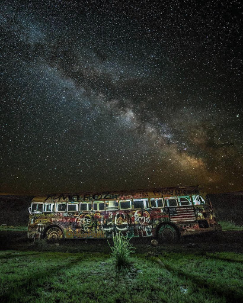

Finibus Tour
To understand the roots of this story, you'd have to track down my classic-guitar-playing roommate, Toby Shepard. Toby used to rotate his guitar sideways and play it like a lute. Toby downed a quart of whiskey while he warmed up with the most beautiful guitar chords you'd ever heard. Then we'd jam, oh man how we'd jam, spinning out the most surreal medieval tunes into the wee hours of the night.
We'd sneak into the secular antiquities section of the UC Santa Barbara library stacks to get the really old classical music books. These were manuscripts lined with gold, scribed by monks over 600 years ago. Toby would carefully open the pages and start warming up by playing the ancient scales while he sipped his bourban, creating a sound so sweet to the ears he began to unleash songs that hadn't been heard by human ears since the middle ages.
I guess one tune stuck in my head, because when I strummed it out as a background track the night before the Finibus tour, I had no idea where it came from. Toby pointed it out to me later, verse TC15 from sections 1.10.32-3 in the Epicurius Codex based on Cicero. He'd been converting a song that accompanied an old Italian epic story to structured chords. We called the song Epicurean Delight, and it had, shall we say, a certain addictive quality. It made our friends at the co-op go wild, spinning on the porch under the stars into the night.
I was always impressed that a simple ancient tune, locked away for so many years, could have become such a big hit. I mean, here's a series of musical notes as old as Pope Pius II topping the charts round the world.
Our first stop was Santa Cruz, then a drive up to Humboldt before circling back toward San Francisco.
The reality of our success began to dawn on us as we rolled into Bakersfield to the accompanyment of our own tune playing from the local fairgrounds as evening transformed the surrounding central California desert.
You would think our mix of electronica and dancehall reggae would sink like a brick here in the upper desert. We'd actually played a few towns away when we first started the prior year. The early songs went over like a 2 Live Crew playing at a Tipper Gore bridge club meeting. No sorry, Finabus didn't play any Dwight Yoakam or Skinnard covers, regardless of how many times the crowd requested.
With the new song getting radio play the week before, the crowd was packed solid in that little road house bar. Drenched in sweat, they danced and pushed in close to the stage and the deep base of my rock-steady base combined with the melodic background cords sent the whole house swaying to a trance inducing beat. We were a scene unto ourselves, a single crazy adredalen soaked heartbeat amplified into the wide desert of moonlit crops and quizzical cattle.
This was an extra special night because my old friends Derek, Liam and Paul were there to join us on stage. Derek had moved back to the east coast and joined an ashram, Liam was coming through Bakersfield with his band Easy Big Fella on their way to LA, and Paul was up from LA scouting for film shoot locations. This was a night unequaled, the stage diving, the love from the crowd, the star-studied glints from the leather jackets and boots of the twirling girls' as their cowboy boots pointed upward as they were carried over the crowd. These were good times, these were the golden years before the storm.
{kind=link}
Somehow I always felt we'd only be a one hit wonder, so we lived large while the limelight was bright. Loaded up with gear and groupies, the bus headed south down back roads lined with fields.
When the front chassis broke on a cattle grill after veering to avoid an old steer head in the road, in our half inebrated state we ended up trading the bus to a farmer for his beat-up trailer and continued the rest of the tour in Toby's cousin's 1968 limo, our equipment lashed precariously on the trailer behind to make the tight schedule. Things were at a fever peak when we rolled into Oakland later that hot July night.
That's where I met Tess, at the Berkley concert, except she wasn't there to see the show. She was working on a large tapestry that hung near the entrance to the theater. I called her over to see if she could watch the trailer while we carried in the woofers, tweeters and things that go ping.
When I came back, Tess was lost in thought, sitting on the edge of the bumper, legs crossed and her finger sketching an invisible pattern on the top of her leg. I was transfixed. Her skin was a pale white, almost pearlescent as the evening light caught the faint freckle patterns across her shoulders and down her back.
Tess worked on the textile team at Island Studio, creating digital fabric designs using fractal patterns that played with your mind. She started by merging 3D images using a new camera being developed by a friend in the spatial photography lab. The result was a dense, ever changing tapestry of fractal shapes and designs. Some days I'd just stare into the threads, lost in a maze that was crazy up-close, but even more jaw dropping from across the room. Each swirl combined with others to form whole universes of color that changed as we walked from side-to-side.
Needless to say, I was really touched when she made the band's cloaks out of a roll of the new material. We felt like royalty, brothers from another planet. That night I dreamt I saw the clearest night sky you can imagine, near infinite detail. In the dream I was following the starts home, like a distant ancestors finding direction by the night sky. I could draw any of those star positions now if you asked me to, because they were the same as the freckles on Tess's back, which I awoke facing them the next morning, thinking about where years ahead would take us next.
I must admit - The common thread of my happiest memories was the glow everyone had after a really good show. The feeling that we really were a great band, doing the right thing. So many late nights, laughing and reveling in the silliness of our sudden fame and the great adventure unfolding.
From coast to coast, station to station, we traveled, embarking for Europe as summer turned to fall. The nights we spent adrift at sea were among my favorite. Here now, off the coast of Tripelee, the band snoozed on our way to Italy as waves lulled Tess and I to sleep. As the boat swayed late into the night, she whispered softly in my ear, "Nam liber tempor cum soluta nobis eleifend." What? Tess's Latin was really good, so good that apparently she could recite it in her sleep. The water lapped gently against the boat and she continued "Option congue nihil imperdiet doming id quod." It was so tranquil, like she was prescribing a soothing recipe for a teething baby. "Mazim placerat facer possim assum. Typi non habent claritatem insitam; est usus legentis in iis qui facit eorum claritatem."
And then I too drifted off to sleep lost in the sounds of the odd string of words, as hypnotic as any James Joyce novel. Rising and falling with the boat, timeless and somehow everywhere all at once.